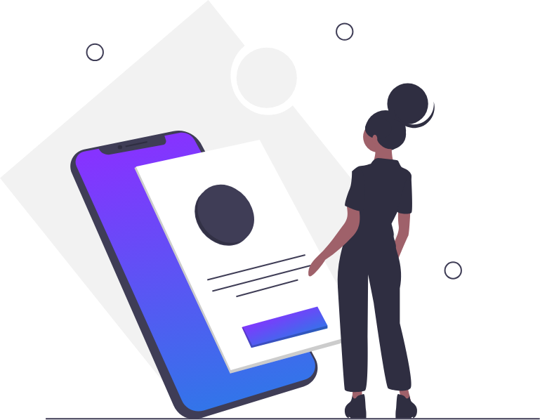

<ion-header>
  <ion-toolbar class="header-close" color="transparent">
    <ion-buttons slot="end" routerLink="/home" routerDirection="back">
      <ion-icon name="close"></ion-icon>
    </ion-buttons>
    
  </ion-toolbar>
</ion-header>

<ion-content padding class="maincontent">
  <div class="settinglist">
    <div class="img-wrapper">
      
    </div>
    <ion-list class="info-list">
      <ion-item class="info-item" detail="false" routerDirection="forward" routerLink="about" lines="none">Über drop.</ion-item>
      <ion-item class="info-item" detail="false" routerDirection="forward" routerLink="impressum" lines="none">Impressum</ion-item>
      <ion-item class="info-item" detail="false" routerDirection="forward" routerLink="privacy" lines="none">Datenschutz</ion-item>
    </ion-list>
  </div>
</ion-content>
